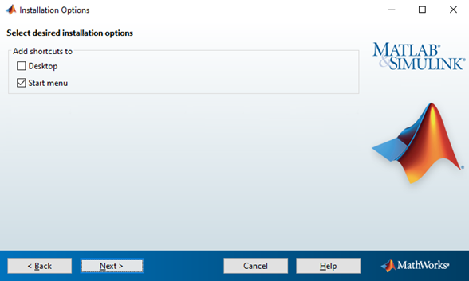

インストール オプションの指定
インストール先のプラットフォームに応じて、次のようないくつかのインストール オプションを指定できます。
Windows
Windows® では、[インストール オプション] ダイアログ ボックスで、[スタート] メニューとデスクトップに MATLAB® の起動用ショートカットを配置するオプションが提供されます。

インストール オプションを選択した後、[次へ] をクリックしてインストールを続行します。
Linux
Linux システムでは、matlab スクリプトおよび mex スクリプトへのシンボリック リンクを作成するかどうかを指定できます。書き込み権限があり、自分のユーザー パスすべてに共通する /usr/local/bin などのフォルダーを指定します。
インストール オプションを選択した後、[次へ] をクリックしてインストールを続行します。